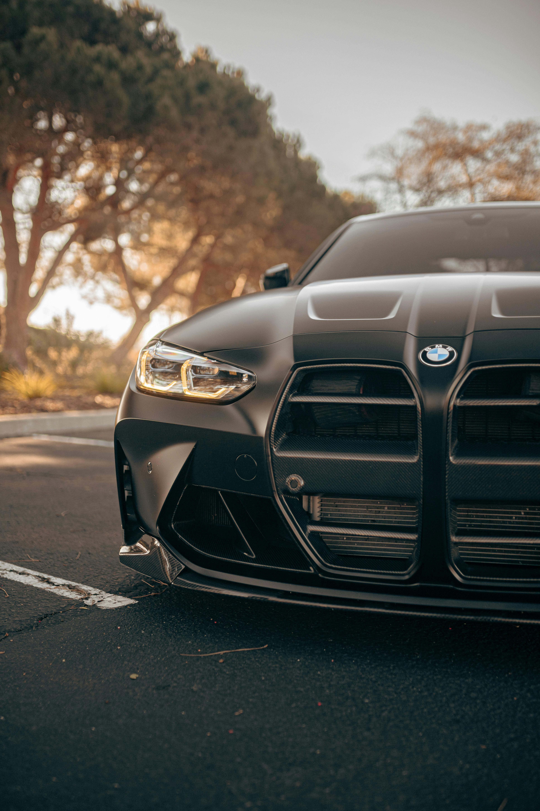
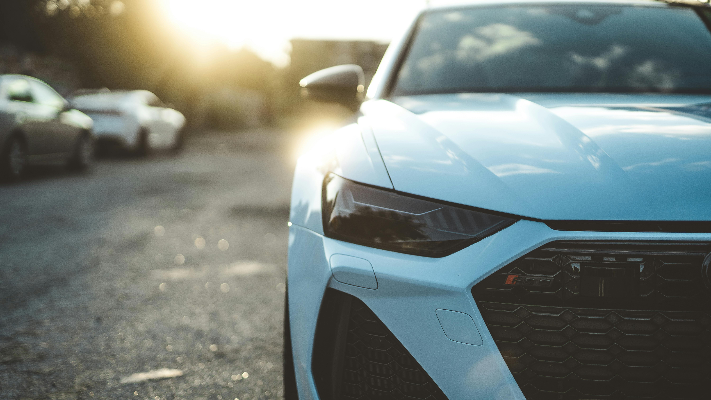
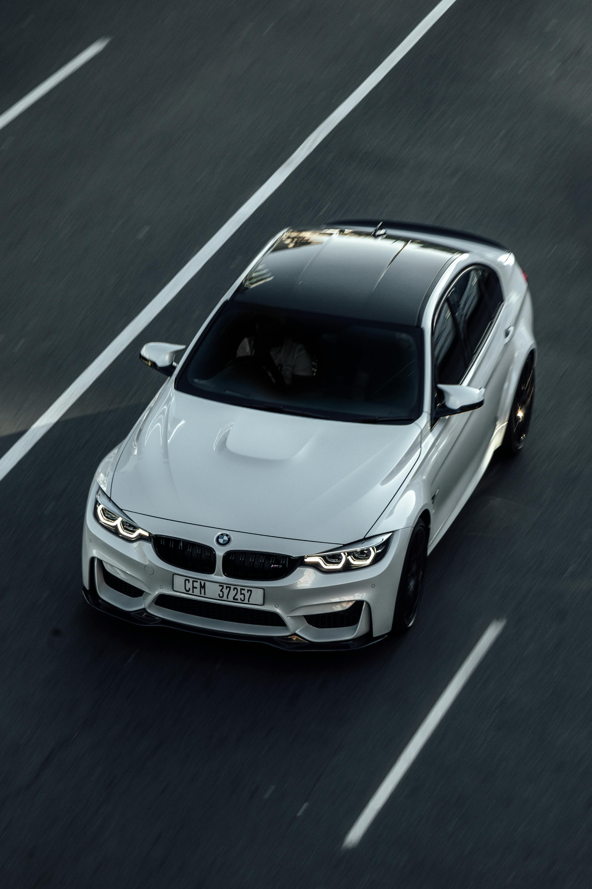

BMW M4 Competition
The G82 BMW M4 Competition is a high-performance sports coupe known for its aggressive styling, powerful engine, and advanced technology. It features a twin-turbocharged 3.0-liter inline-six engine, producing 503 horsepower, paired with an 8-speed automatic transmission. The M4 Competition is rear-wheel-drive (or optionally all-wheel-drive with the xDrive model) and offers a dynamic driving experience with precise handling. Its design includes a large kidney grille, wide fenders, and aerodynamic elements, while the interior is equipped with premium materials, sports seats, and the latest infotainment systems.
Audi Rs7
The Audi RS7 is a high-performance luxury sedan that blends sleek design with impressive power. It features a twin-turbocharged 4.0-liter V8 engine that produces 591 horsepower, paired with an 8-speed automatic transmission and Audi’s quattro all-wheel-drive system. The RS7 offers rapid acceleration and sharp handling, making it both a comfortable cruiser and a dynamic sports car. Its exterior is characterized by a wide stance, aggressive front grille, and coupe-like roofline. Inside, the RS7 boasts a luxurious cabin with premium materials, advanced technology, and sporty details like bolstered seats and customizable digital displays.
BMW m3 Competition
The F80 BMW M3 Competition is a high-performance version of the iconic M3 sports sedan, known for its precision and power. It is equipped with a 3.0-liter twin-turbocharged inline-six engine that produces 444 horsepower, mated to either a 7-speed dual-clutch automatic transmission or a 6-speed manual. The car is rear-wheel-drive, delivering sharp handling and a thrilling driving experience. The F80 M3 Competition features an aggressive design with flared fenders, a sculpted hood, and signature M design elements like the quad exhaust pipes. Inside, it offers a driver-focused cabin with supportive sports seats, premium materials, and advanced technology.